query문을 이용한 DB 테이블 확인
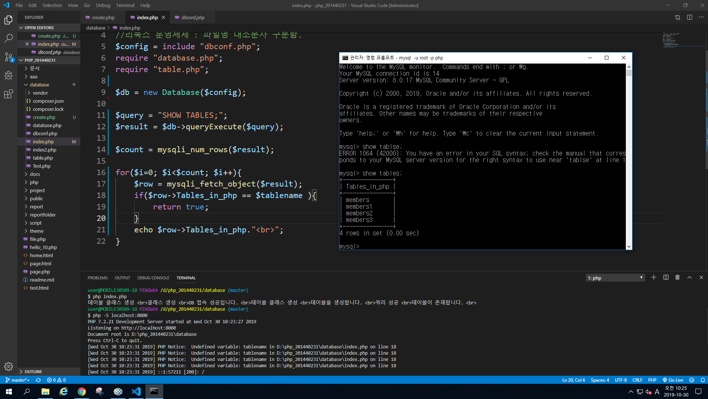
실행 결과 및 localhost 연결
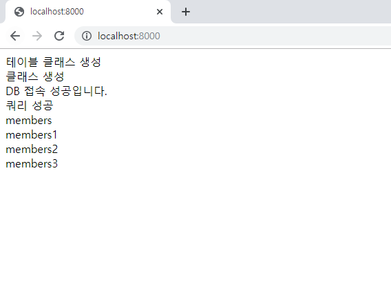
기존에 있는 github 사이트 말고 새로운 사이트 생성
그 후 README.md 파일 생성 후 git add로 추가
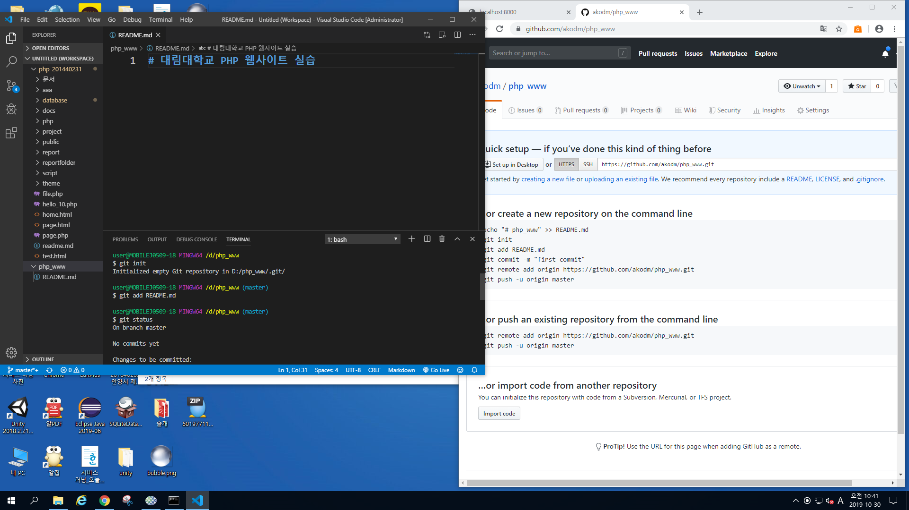
php_www 라고 생성 성공
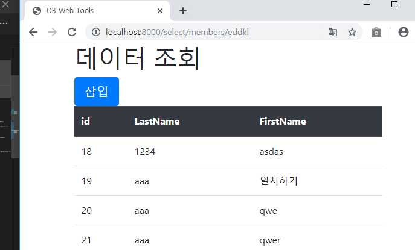
새로운 곳에서 출력해 보기
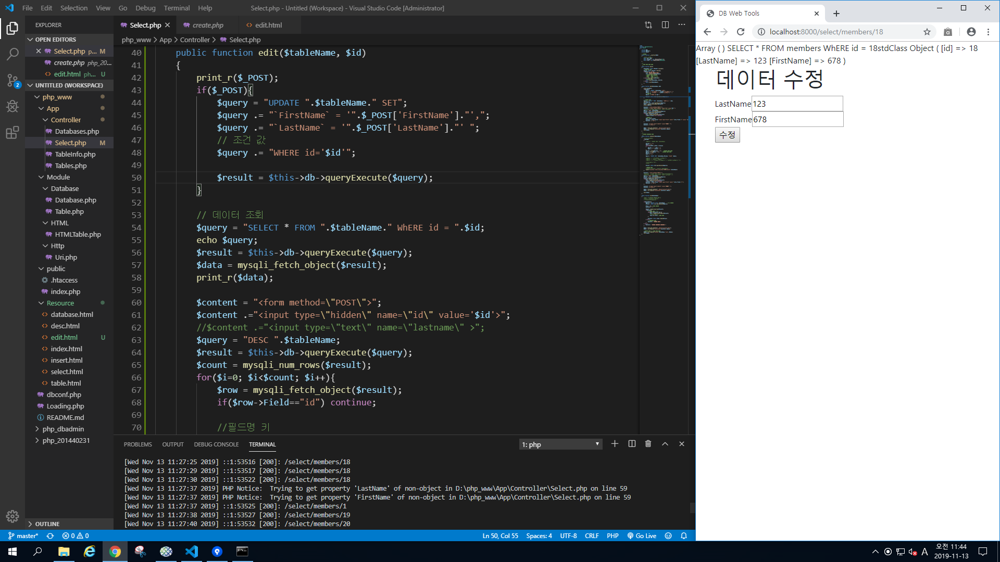
dbconf.php 파일을 만든 뒤 include해서 출력해 보기
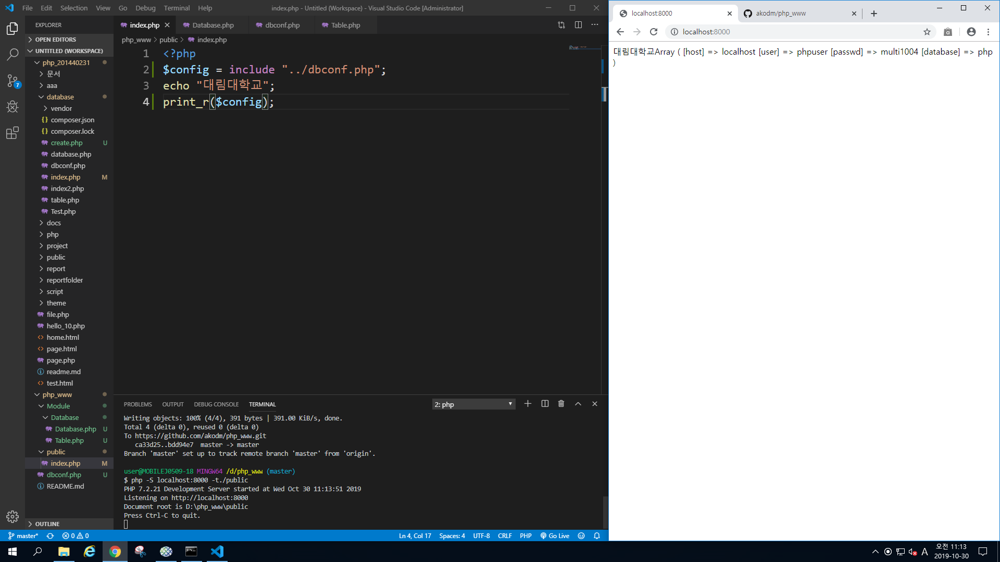
그러면 배열 형태로 출력이 가능하다.
Module database를 require로 해서 출력하기
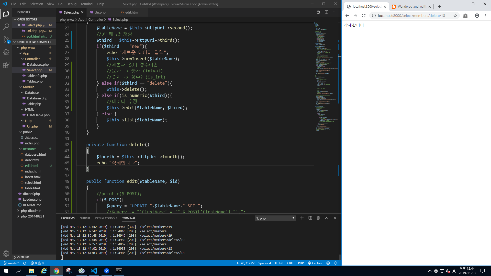
간단한 namespace로 해주기
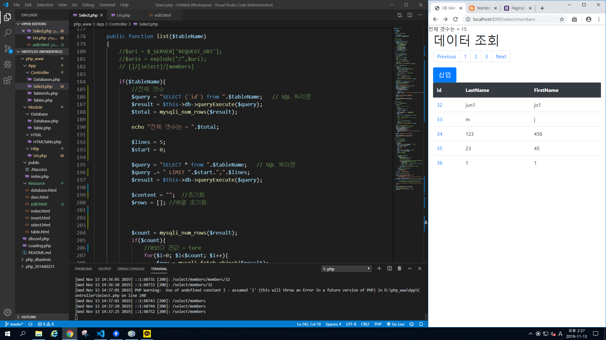
생성자 메소드
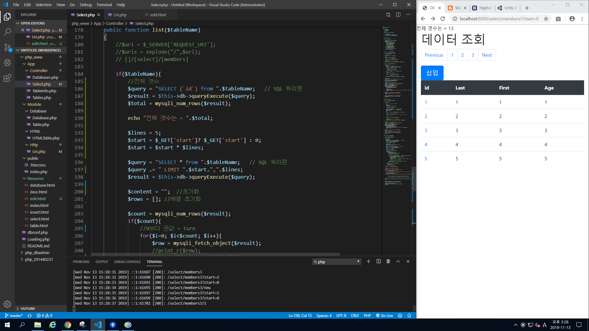
html 내에 테이블 생성하기
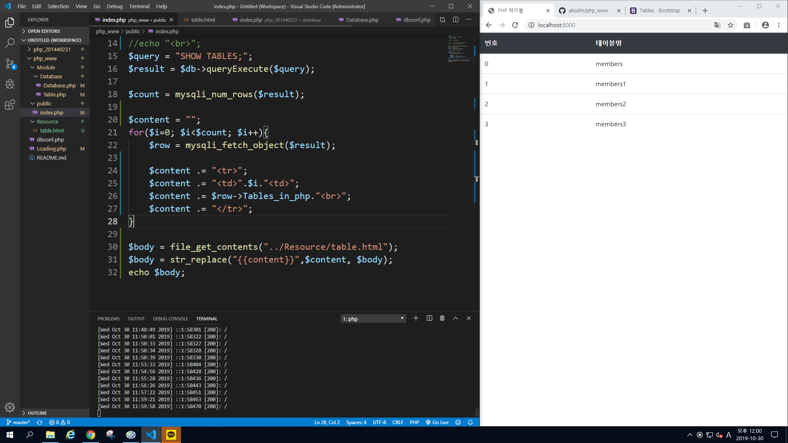
테이블 명들 설정하기
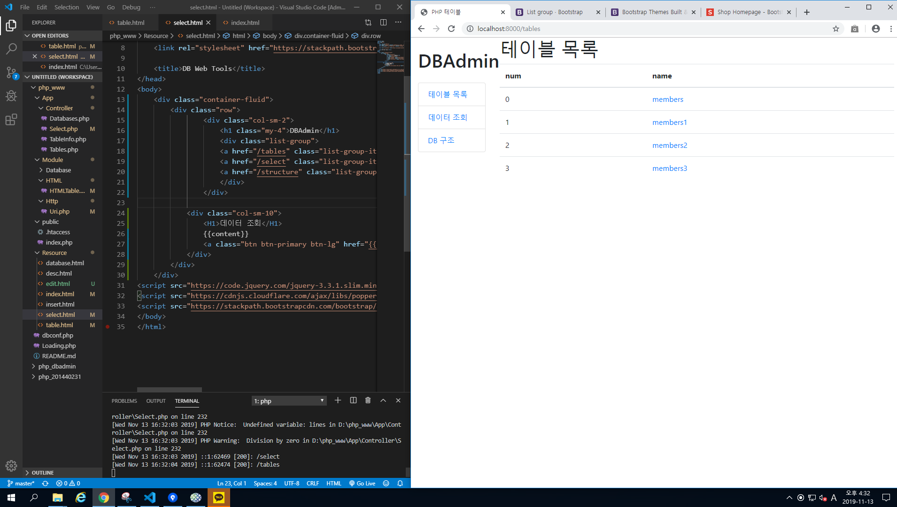
URI 서버로 열기
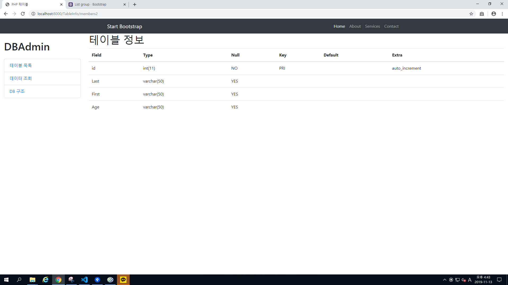
uris를 if문 이용해 출력하기
Resousce 폴더를 만들고 그안에 index.html 파일을 만들고 사이트가 만들어진다.
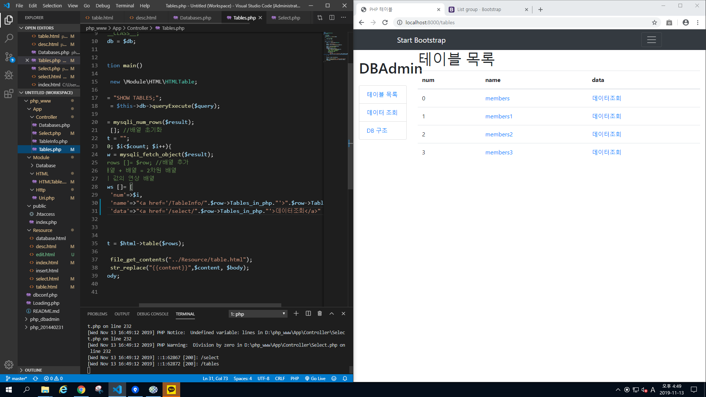
테이블에 배열 추가와 쿼리문 추가
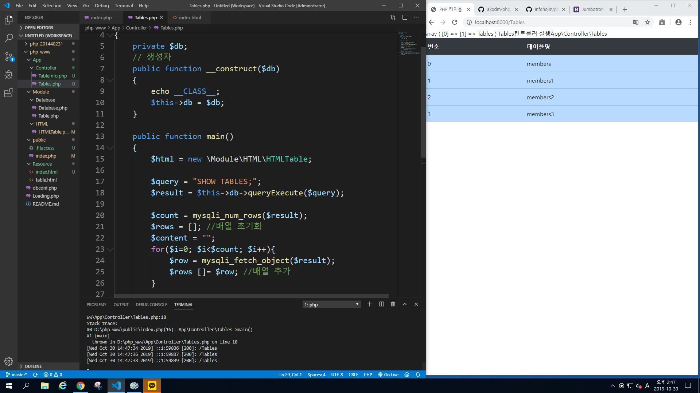
member에 관한 것들 모두 출력 (desc) 사용
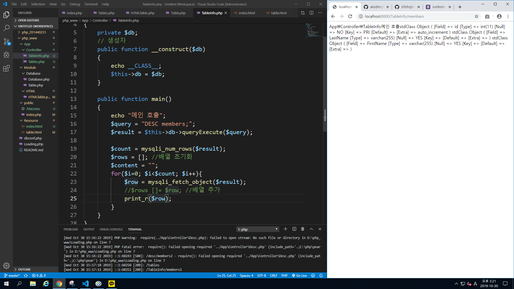
primary key 같은것들 설정 성공
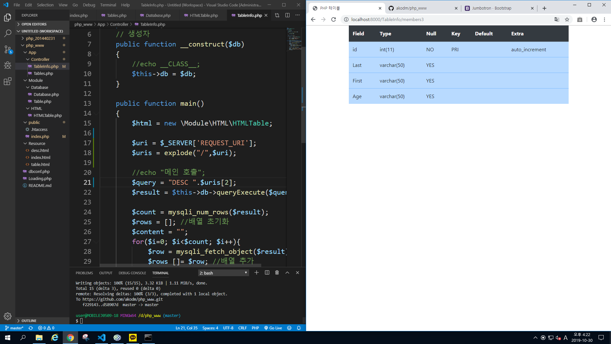